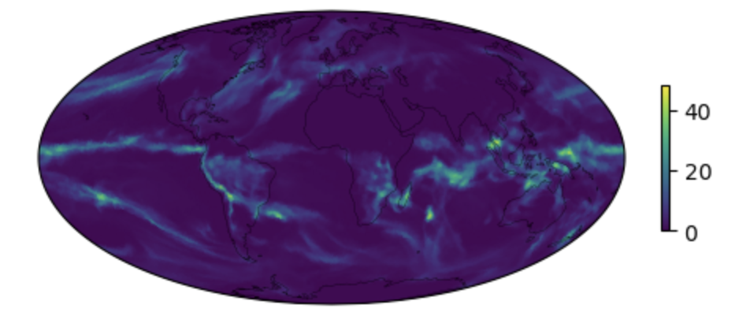

Advance Plotting
Contents
Advance Plotting#
Setting up the notebook#
Here we load modules needed for our analysis
Use the kernel NPL 2023b, it can be found in the drop down menu on the upper right
# loading modules
# %load_ext watermark # this is so that in the end we can check which module versions we used
%load_ext autoreload
import warnings
warnings.filterwarnings("ignore")
import cartopy.crs as ccrs
import cartopy.feature
import matplotlib.pyplot as plt
import xarray as xr
import numpy as np
import pop_tools
Get the data#
path = '/glade/scratch/gmarques/archive/gpop.e23.GJRA.TL319/ocn/hist/gpop.e23.GJRA.TL319.pop.h.0*.nc'
ds = xr.open_mfdataset(path, compat='override', coords='minimal')
Exercise 5#
Maximum mixed-layer depth for the winter months in the northern hemisphere (January, February, and March) and in the southern hemisphere (July, August, and September)
# POP grid
pop_grid = pop_tools.get_grid('POP_gx1v7')
ds['TLONG'] = pop_grid.TLONG; ds['TLAT'] = pop_grid.TLAT
ds['ULONG'] = pop_grid.ULONG; ds['ULAT'] = pop_grid.ULAT
# July, August, and Septemper (JAS)
def is_jas(month):
return (month >= 7) & (month <= 9)
JAS = ds['XMXL'].sel(time=is_jas(ds['XMXL']['time.month'])).mean('time')
# January, February, and March (JFM)
def is_jfm(month):
return (month >= 1) & (month <= 3)
JFM = ds['XMXL'].sel(time=is_jfm(ds['XMXL']['time.month'])).mean('time')
# Find the latitude value closest to the equator
def find_nearest(array, value):
array = np.asarray(array)
idx = (np.abs(array - value)).argmin()
return array[idx]
eq=find_nearest(JAS['TLAT']['TLAT'][:,0], value=0)
print(eq)
0.13347788552784873
# Find the index of this latitude
idx=np.where(JAS['TLAT']['TLAT'][:,0] == eq)[0]
print(idx)
[187]
# Create a new array
winter=JFM.copy()
# Since the variable winter already contains the data for the Northern Hemisphere, we will now add the data for the Southern Hemisphere
winter.loc[0:187,:]=JAS.loc[0:187,:]
plt.figure(figsize=(8,6));
ax = plt.axes(projection=ccrs.Robinson());
orig_map=plt.cm.get_cmap('turbo')
scale_color=orig_map.reversed()
cf=(winter*0.01).plot.pcolormesh(ax=ax, # Multiply by 0.01 to transform centimeters to meters
vmax=500,vmin=0,
transform=ccrs.PlateCarree(),
x='TLONG',
y='TLAT',
cmap=scale_color,
add_colorbar=False,
)
ax.coastlines()
ax.add_feature(cartopy.feature.LAND)
ax.gridlines(crs=ccrs.PlateCarree(), draw_labels=True,
linewidth=2, color='gray', alpha=0.5, linestyle='-')
cbar = plt.colorbar(cf, ax=ax, shrink=0.5, pad=0.1, ticks=np.arange(0,500,100), label='XMXL [m]')
plt.title('Maximum Mixed-Layer Depth for the Winter', fontsize=14)
Click here for the solution

Figure: Plotting solution.
Exercise 6#
Calculate the heat storage (HS) per area from the temperature tendency for the upper 2000m. Equation: $\(\rm{HF = \uprho_\uptheta~C_p~\int_{z_2}^{z_1}\uptheta_{(z)}'~dz},\)$ where:
HF is heat storage (\(\rm{W~m^{-2}}\)),
\(\uprho_\uptheta\) is the sea water density (\(\rm{kg~m^{-3}}\)),
\(\rm{C_p}\) is the sea water specific heat (\(\rm{J~kg^{-1}~^{\circ}C^{-1}}\)),
\(\rm{dz}\) is the cell thickness (m),
and \(\uptheta\) is the temperature tendency (\(\rm{^{\circ}C^{-1}~s^{-1}}\)).
ds_HS=ds['TEND_TEMP'].sel(z_t=slice(0,200000))*ds['dz'].sel(z_t=slice(0,200000))*0.01 # Select the depth and multiply by dz. Unit: oC.s-1.m
ds_HS=ds_HS.sum('z_t') # Sum in depth
ds_HS=ds_HS*1026 # Multiply it by the sea water density. Unit: oC.s-1.kg.m-2
ds_HS=ds_HS*3996 # Multiply it by the sea water heat specific. Unit: W.m-2
plt.figure(figsize=(8,6))
ax = plt.axes(projection=ccrs.Robinson())
orig_map=plt.cm.get_cmap('RdBu')
scale_color=orig_map.reversed()
cf=ds_HS.mean('time').plot.pcolormesh(ax=ax,
transform=ccrs.PlateCarree(),
vmin=-20,
vmax=20,
x='TLONG',
y='TLAT',
cmap=scale_color,
add_colorbar=False,
)
ax.coastlines()
ax.add_feature(cartopy.feature.LAND)
ax.gridlines(crs=ccrs.PlateCarree(), draw_labels=True,
linewidth=2, color='gray', alpha=0.5, linestyle='-')
cbar = plt.colorbar(cf, ax=ax, shrink=0.5, pad=0.1, label='HS [W m$^{-2}$]')
plt.title('Heat Storage per Area for the Upper 2000 m', fontsize=14)
Click here for the solution

Figure: Plotting solution.